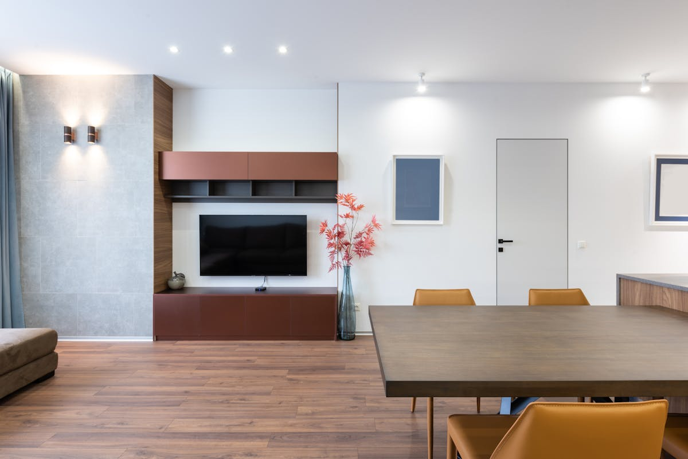

Бойлер на дачу: за и против
Подмосковная дача — горячей воды нет, а душ хочется. Чаще всего ставят электрический бойлер. Но есть нюансы, о которых редко говорят в магазине.
Электрика на даче часто слабая
Старые СНТ часто имеют ввод 5–10 кВт на весь дом. Бойлер на 2 кВт + чайник + плитка — и пробки выбило. Перед покупкой посчитайте все одновременные нагрузки.
Разморозка зимой
Если вы зимой не ездите — воду из бойлера ОБЯЗАТЕЛЬНО сливать перед холодами. Иначе вода замёрзнет, расширится, и треснет внутренний бак. Гарантия на это не распространяется.
Объём по семье
Для дачи на 2 человек хватит 50 литров (1 короткий душ + посуда). На семью с детьми — 80–100 литров. Меньше 50 не берите, нет смысла.
Установка
Нужна хорошая стена (бойлер 80 л весит с водой 90 кг), розетка с заземлением и обязательно холодная подводка через предохранительный клапан. Без клапана бак может взорваться при перегреве.
Итого
На сезонной даче электробойлер работает отлично, если решены вопросы электрики и разморозки. Перед покупкой обязательно посчитайте нагрузку — это сэкономит вам новый щит.
Нужна помощь сантехника в Павловском Посаде, Ногинске, Электростали или Электрогорске?
Звоните: +7 (977) 100-22-62. Приеду с инструментом, диагностика бесплатная.